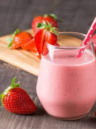

Shake Proteico de Morango
Ingredientes:
- 1 scoop de whey protein sabor morango
- 1 xícara de leite desnatado
- 1/2 xícara de morangos frescos
- 1 colher de sopa de aveia
- Gelo a gosto
Modo de Preparo:
Bata todos os ingredientes no liquidificador até obter uma mistura homogênea. Sirva gelado.
Bolo de Banana com Whey
Ingredientes:
- 2 bananas maduras
- 3 ovos
- 1 scoop de whey protein sabor baunilha
- 1 xícara de farinha de aveia
- 1 colher de sopa de mel
- 1 colher de chá de fermento em pó
Modo de Preparo:
Amasse as bananas e misture com os ovos e o mel. Adicione os ingredientes secos e misture bem. Coloque a massa em uma forma untada e leve ao forno preaquecido a 180°C por 25 minutos ou até dourar. Deixe esfriar antes de servir.